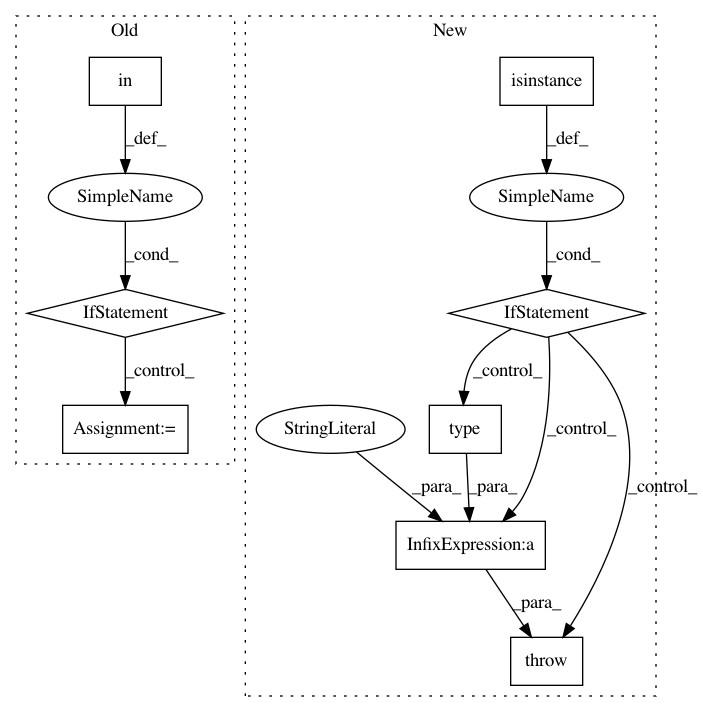

81092be4e1e900473cd008fec50dc49c8af2eed9,tensorflow_hub/keras_layer.py,KerasLayer,call,#KerasLayer#Any#Any#,166
Before Change
// Unwrap dicts returned by signatures.
if self._is_hub_module_v1:
if "default" in result:
result = result["default"]
else:
raise ValueError("Signature does not has an output named `default`.")
// TODO(b/142213824): Remove setting shapes when shape inference works.
result = self._apply_output_shape_if_set(inputs, result)
return result
def _get_callable(self):
After Change
// Unwrap dicts returned by signatures.
if self._output_key:
if not isinstance(result, dict):
raise ValueError("Specifying `output_key` is forbidden if output "
"type %s is not a dict." % type(result))
if self._output_key not in result:
raise ValueError(
"KerasLayer output does not contain the output key %s "
"(available: %s)." % (self._output_key, result.keys()))
In pattern: SUPERPATTERN
Frequency: 3
Non-data size: 8
Instances
Project Name: tensorflow/hub
Commit Name: 81092be4e1e900473cd008fec50dc49c8af2eed9
Time: 2019-10-29
Author: no-reply@google.com
File Name: tensorflow_hub/keras_layer.py
Class Name: KerasLayer
Method Name: call
Project Name: automl/SMAC3
Commit Name: 19b609754c23e8fb434236e4bbd5341d1745109c
Time: 2015-12-03
Author: feurerm@informatik.uni-freiburg.de
File Name: smac/smbo/smbo.py
Class Name: SMBO
Method Name: __init__
Project Name: apache/incubator-mxnet
Commit Name: e2cbf6605e1a6f15777099f56821b42159605335
Time: 2020-08-12
Author: lausen@amazon.com
File Name: python/mxnet/gluon/trainer.py
Class Name: Trainer
Method Name: __init__